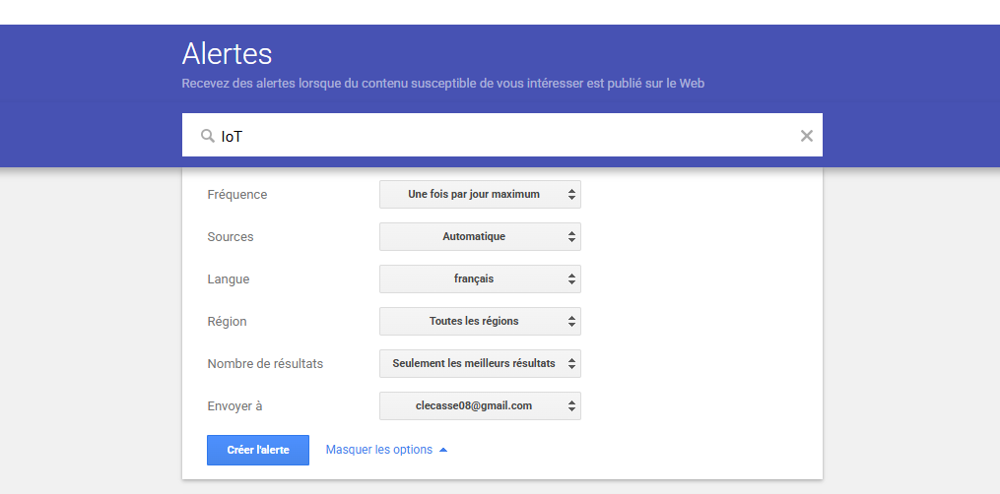

Maison intelligente
Capteurs, caméras, thermostats connectés, serrures intelligentes, assistants vocaux.
- Confort & économies d’énergie.
- Gestion intelligente des appareils pour un meilleur confort au quotidien.
Ce tableau de veille suit les innovations, les risques de cybersécurité et les enjeux des objets connectés : domotique, santé, mobilité, industrie 4.0 et smart cities. L’objectif est de disposer d’une vision claire, documentée et à jour.
Un objet connecté est un dispositif capable de collecter, transmettre ou recevoir des données via Internet ou un autre type de réseau (Wi-Fi, Bluetooth, 4G/5G, LoRa, etc.).
Ces objets peuvent être domestiques (montres, thermostats, caméras) ou industriels (capteurs IIoT, robots, machines connectées).
L’Internet des Objets (IoT) désigne l’ensemble des objets connectés et des technologies qui leur permettent de communiquer entre eux ou avec une plateforme cloud.
L’IoT forme un écosystème : objets + réseaux + cloud + analyse de données + automatisation. Il est utilisé dans la maison, la santé, l’industrie 4.0, la mobilité et les smart cities.
Capteurs, caméras, thermostats connectés, serrures intelligentes, assistants vocaux.
Bracelets de suivi, capteurs médicaux à domicile, télésurveillance de patients.
Capteurs sur machines, maintenance prédictive, robots connectés, jumeaux numériques.
Eclairage intelligent, parkings connectés, transport public, véhicules connectés.
| Risque | Impact | Probabilité | Exemple | Mesures |
|---|---|---|---|---|
| Botnet / DDoS | Très fort | Élevée | Appareils grand public utilisés pour attaquer des sites ou services. | Mises à jour, changement mots de passe, filtrage réseau, segmentations VLAN. |
| Intrusion dans un foyer | Fort | Moyenne | Caméra ou serrure connectée compromise permettant un accès physique. | Choix de marques fiables, chiffrement, authentification forte, mise à jour. |
| Fuite de données de santé | Très fort | Moyenne | Dispositif médical connecté exposant des données sensibles. | Protocoles sécurisés, stockage chiffré, politique RGPD stricte, audits réguliers. |
| Arrêt de production IIoT | Très fort | Faible à moyenne | Attaque ciblant des automates ou capteurs industriels. | Segmentation OT/IT, sauvegardes, supervision, plans de continuité. |
La veille technologique permet de surveiller, analyser et anticiper les évolutions d'un domaine. Dans le contexte des objets connectés (IoT), elle joue un rôle essentiel pour comprendre un secteur en pleine transformation.
En résumé, la veille technologique IoT permet de rester informé, de prendre des décisions éclairées et de mieux anticiper les évolutions d’un marché en rapide expansion.
Sélection d’articles les plus récents mis à jours tous les lundis
06/12/2025 · Source : Les Numériques
La nouvelle mise à jour offre quelques fonctionnalités inédites, dont la possibilité de créer des zones de détection de mouvement avec de simples ampoules.
03/12/2025 · Source : The Verge
Test de 30 serrures connectées controlables depuis votre téléphone, votre visage ou votre empreinte digitale.
03/12/2025 · Source : Monnit
Adoption de la norme Wi-Fi 6 pour les capteurs IoT, ce qui promet de meilleures performances, densité d’appareils, efficacité et compatibilité réseaux.
02/12/2025 · Source : Wittra
Un botnet nommé ShadowV2, basé sur Mirai, a ciblé les objets connectés fin octobre 2025. Il exploite plusieurs failles connues pour infecter des équipements IoT vulnérables et les transformer en bots DDoS.
27/11/2025 · Source : The Hacker News
Wittra annonce sa participation à un projet de recherche 6G — cela pourrait avoir un impact fort sur l’IoT industriel
29/10/2025 · Source : Mobile World Live
Le nombre d’appareils IoT devrait encore progresser fortement (+ 14 % en 2025), ce qui confirme un marché en expansion rapide.
Combinaison d’outils gratuits et professionnels pour couvrir l’écosystème IoT : flux RSS, brevets, réseaux sociaux, blogs sécurité.
Service d’alertes Google pour suivre des mots-clés IoT, cybersécurité, smart home, etc.
Survoler pour voir un exemple détaillé.
Google Alerts est un service permettant de recevoir automatiquement des notifications lorsqu’un nouveau contenu correspondant à un mot-clé apparaît sur le web. Le moteur Google effectue un balayage continu : dès qu’un article, une page ou une publication correspond à vos critères, une alerte vous est envoyée.

Pour créer une alerte, il suffit de saisir un mot-clé (ex : objet connecté) puis de configurer :
Flux : ZDNet IoT, IoT World Today, The Verge, Wired, blogs sécurité, cloud & edge. Catégories : Tech, Sécurité, Business.
➜ Centralise les sources pour un balayage quotidien rapide et un archivage thématique.
Règles : classement automatique en Sécurité, Standards, Cas d’usage. Ajout de tags (ex. Zero Trust, Matter).
➜ Permet de prioriser les signaux importants et de réduire le bruit informationnel.
Suivi d’experts IoT, CERT, chercheurs en sécurité, éditeurs cloud (AWS, Azure, GCP), fabricants (Cisco, Siemens, Xiaomi, etc.).
➜ Permet de détecter en amont les vulnérabilités et tendances avant la presse généraliste.
Surveille le web, les réseaux sociaux et blogs en temps réel.
Mots-clés suivis : IoT, cybersécurité IoT, smart home.
➜ Alerte avancée permettant de détecter des signaux faibles avant la presse.
Alternative plus précise à Google Alerts pour le suivi IoT et sécurité.
➜ Détecte rapidement incidents, attaques IoT et nouvelles réglementations.
Suivi automatique des vulnérabilités IoT (caméras, routeurs, capteurs, API).
➜ Indispensable pour identifier les failles critiques et botnets exploitant l’IoT.
Génère des SBOM pour analyser les composants logiciels et détecter des risques IoT.
Utile pour identifier les bibliothèques vulnérables dans les firmwares ou applications IoT.
Quelques questions/réponses pour clarifier la démarche et les limites.
Une revue rapide est effectuée plusieurs fois par semaine (alertes, flux RSS, réseaux sociaux), avec une synthèse structurée au moins une fois par mois.
Cett veille donnt la priorité aux sources reconnues (éditeurs, CERT, médias spécialisés, blogs d’experts). Les rumeurs ou contenus non vérifiés ne sont pas intégrés au tableau principal.
Non. Les start-up, projets open source et initiatives de normalisation (ex. Matter, ETSI, IETF) sont également suivis, car ils influencent fortement l’écosystème.
Les principaux risques incluent la fuite de données, les botnets, l’intrusion physique via des caméras ou serrures compromisés, et les attaques visant les infrastructures industrielles connectées.
Mettre à jour le firmware, changer les mots de passe d’usine, activer le chiffrement, isoler les appareils IoT dans un VLAN dédié, et choisir des marques reconnues.
Les plus courants sont MQTT, CoAP, Zigbee, Z-Wave, Bluetooth Low Energy, LoRaWAN et Wi-Fi. Chaque protocole a ses avantages selon la portée, la consommation énergétique et le débit souhaité.
Oui, grâce à l’IA locale, les objets peuvent analyser des données en temps réel sans envoyer toutes les informations au cloud, ce qui améliore la rapidité et la confidentialité.
Oui, car beaucoup d’objets connectés utilisent des configurations faibles ou des services cloud peu sécurisés. Une mauvaise configuration peut exposer des données sensibles.